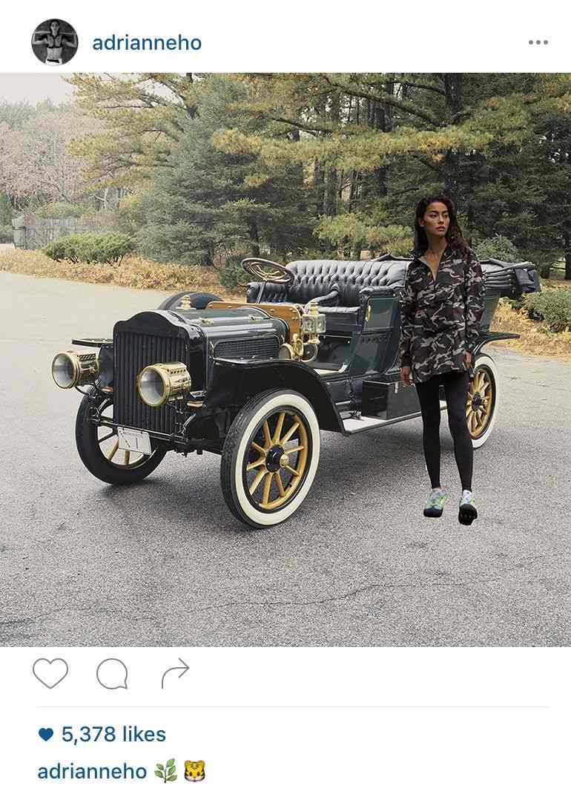
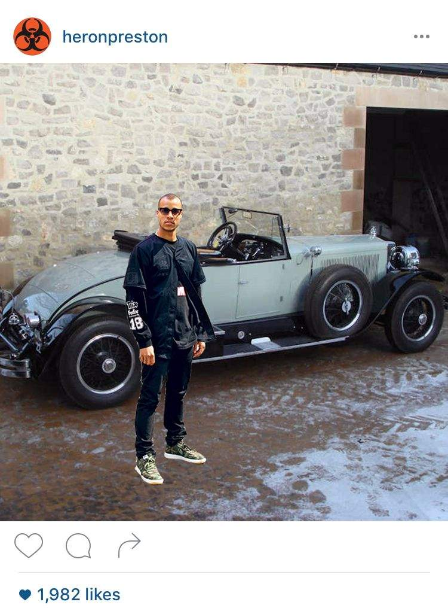

Steam cars are not what they used to be. Manufacturers are boasting updated versions of their new models and people are noticing. Not only do these latest steam cars operate without a clutch or transmission, they also can climb the steepest grade without shifting gears at all. They are quieter, faster, start more quickly, and are easier to operate. Young tastemakers are singing the cars' praises on social media, so we caught up with a few of them to ask why.
AH: Yeah! I bought the car a few months ago, and have been using it every week or so when I go out of the city.
AH: Well, I live in LA. It's not the best car for traffic or for a daily commute, but when I get out of the city for a nice drive, it is the perfect thing. It's zippy and gets pretty great gas milage. I love to drive it back and forth to a great hike.
AH: I love that you can get the old fashion, beautiful look, but feel assured that it will run great. I've always wanted an old car, but until these new steam car models came out, I was anxious to jump on it. At least with this, I know it will start up fast and cause me no problems so I can enjoy my day.
HP: Yeah, I love it. I live in New York, so I don't drive a lot. It's normally easier to take the train. But I saw this episode of Jay Leno's Garage where he was driving around in a Doble E-20 and I was like "man, I really need to have something like that."
HP: Not entirely, but that's what put me on. Then I read into them a bit more, and realized it wouldn't be like a typical car. Steam cars run differently so they're easier to use. I got this one because I love the body, the color, the shape.
I had to. And steam cars come in the best colors. Love this light blue.
AC: (Laughs) Yeah, I got a steam carriage. I absolutely love it. I didn't need a car, but I loved the idea of being able to ride around the city somehow. This felt so elegant to me.
AC: No, just when I have some time off. I like to use it when I'm in the Hamptons. I keep it at my house there. I bought it for when I have time to relax.
AC: It's a Toledo Steam Carriage. It drives really smoothe. Faster than a bike, but not for speed racing or anything like that.
Do you think steam cars are making a comeback? Tweet or Instagram us @ModernMechanix.